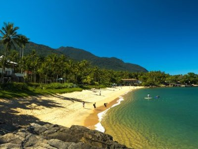
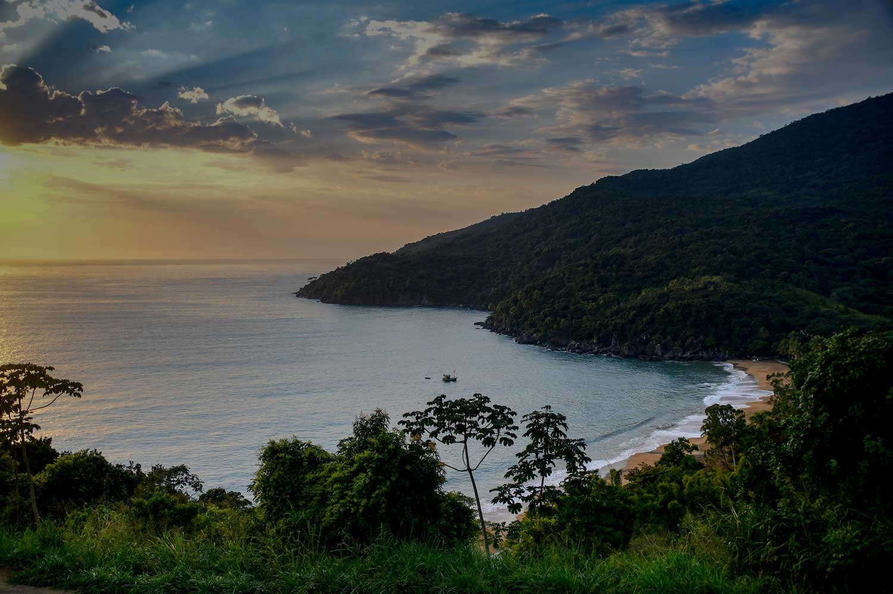
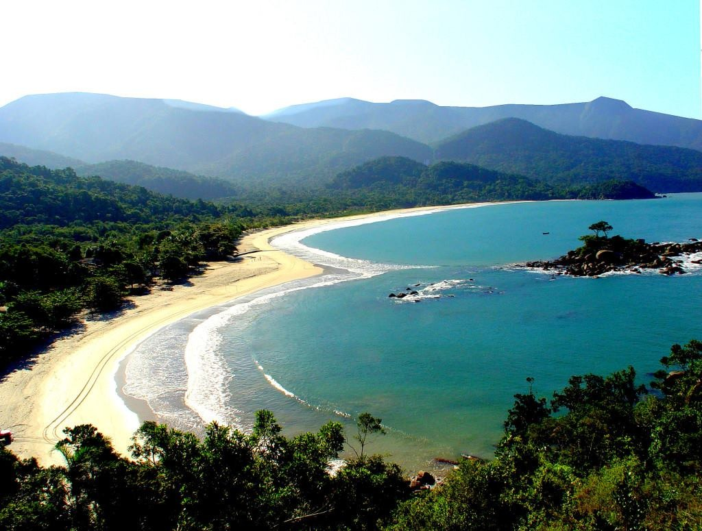
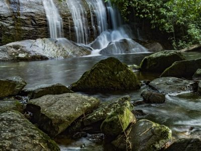
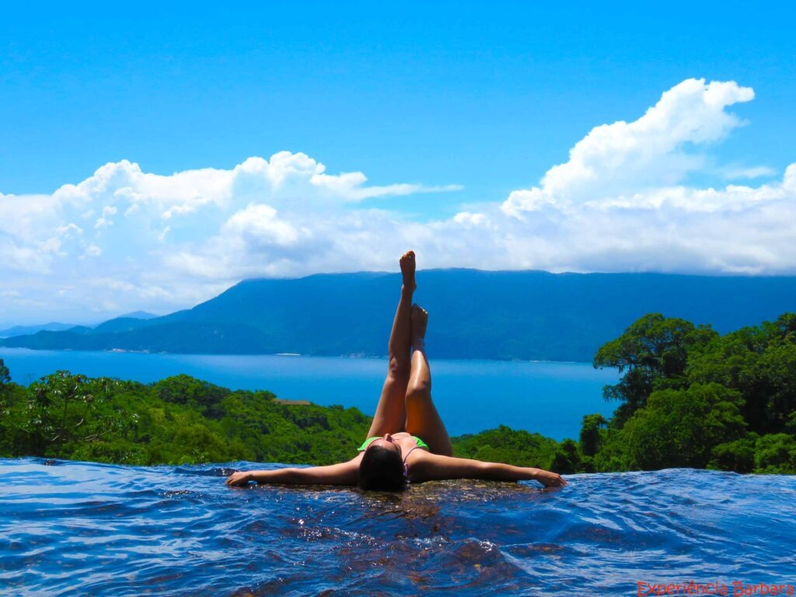
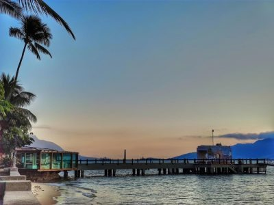
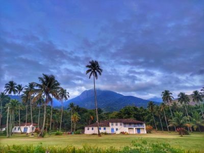

Praia da Feiticeira
Localizada ao sul da ilha, é uma das favoritas de Ilhabela, perfeita para famílias que buscam tranquilidade. Possui um antigo casarão colonial, que já foi sede da Fazenda São Mathias, e duas cachoeiras desaguam na praia.
Praia do Jabaquara
Entre as mais bonitas e preservadas de Ilhabela, esta praia é famosa por suas águas transparentes e pela vista espetacular do mirante na estrada.
Baía de Castelhanos
Uma das praias mais belas do Brasil e um dos principais destinos turísticos da ilha. Suas águas cristalinas formam um coração que pode ser admirado de um mirante ao qual se chega por uma pequena trilha.
Cachoeira dos três tombos
Cachoeira de fácil acesso que fica no sul da Ilha, próximo a praia da Feiticeira e Portinho, ideal para quem quer tomar um banho refrescante e sem andar muito pela trilha.
Cachoeira do Paquetá
Famosa por sua borda infinita, esta cachoeira é um dos pontos turísticos mais procurados de Ilhabela, oferecendo uma vista deslumbrante para o mar.
Pico do Baepi
Não é o mais alto da ilha, mas é o preferido dos montanhistas. Com uma vista de 360º, é possível ver a Serra do Mar, o Arquipélago de Alcatrazes e o Canal de São Sebastião.
Vila

Passear pela Vila é como viajar no tempo. Com suas construções coloniais, lojinhas coloridas e restaurantes variados, cada esquina revela um pouco de sua rica história.
Pier da Vila
Um local tranquilo onde pescadores se reúnem à noite. Ideal para apreciar a vista do mar e sentir a brisa do oceano. É também o ponto de chegada de turistas de cruzeiros.
Fazenda do Engenho
Construída no século XVIII, esta fazenda foi importante na produção de cana-de-açúcar e hoje faz parte do patrimônio histórico de Ilhabela.